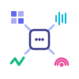

More modalities, harder problems.
Supported by Horizon Europe · DVPS · ELLIOT · ELLISMultimodal ML has come a long way, but most of the science still assumes two modalities: vision and language. The moment we add audio, video, time-series, wearable sensors, satellite imagery, or clinical signals, the usual recipes for tokenization, fusion, and pretraining stop being obvious.
This workshop takes the modality itself as the unit of study. What is actually learnable about each one? Which structural properties (causality, dimensionality, sampling regime, physical grounding) transfer, and which don't? How should those answers shape the way we build and reuse models?
We want talks and papers with concrete problem statements and empirical findings, not survey-level overviews. Theoretical work is equally welcome.
Cordelia Schmid
INRIA, France
Self-supervised audio-visual learning
Paul Pu Liang
MIT Media Lab
Foundations of multisensory AI
Neil Zeghidour
Kyutai, Paris
Discrete representations for audio
Zeynep Akata
TU Munich / Helmholtz Munich
Aligning modalities when paired data is scarce
Jean-Baptiste Alayrac
Google DeepMind
Interleaved pretraining & few-shot learners
All times are local (Paris, CET). Invited talks: 30 min + 15 min discussion. Contributed talks: 12 min + 3 min Q&A.
| Time | Event |
|---|---|
| 08:30–08:45 | Authors put up posters |
| 08:45–09:00 | Opening Remarks |
| 09:00–09:45 | Invited Talk 1 — Cordelia Schmid (INRIA) Seeing Through Sound: Self-Supervised Learning from Audio-Visual Correspondence |
| 09:45–10:30 | Invited Talk 2 — Paul Pu Liang (MIT Media Lab) Beyond Vision and Language: Foundations of Multisensory Artificial Intelligence |
| 10:30–11:00 | Coffee Break |
| 11:00–11:45 | Invited Talk 3 — Neil Zeghidour (Kyutai, Paris) Tokens All the Way Down: Discrete Representations for Audio in Multimodal Models |
| 11:45–12:15 | Contributed Talks I — 2 × 15 min selected from accepted submissions |
| 12:15–13:45 | Poster Session + Lunch — All accepted papers presented |
| 13:45–14:30 | Invited Talk 4 — Zeynep Akata (TU Munich / Helmholtz Munich) Learning to Align Modalities When Paired Data Is Scarce |
| 14:30–15:15 | Invited Talk 5 — Jean-Baptiste Alayrac (Google DeepMind) Interleaved Pretraining and the Architecture of Multimodal Few-Shot Learners |
| 15:15–15:45 | Coffee Break |
| 15:45–16:15 | Contributed Talks II — 2 × 15 min selected from accepted submissions |
| 16:15–16:50 | Panel Discussion One latent space to bind them all: is a shared embedding across modalities a scientific goal or an engineering convenience? Moderated debate; audience participation encouraged |
| 16:50–17:00 | Closing Remarks and Best Paper Award |
We seek contributions addressing the scientific foundations of models that process, align, and reason over many heterogeneous input modalities. We welcome works-in-progress and mature research. Purely theoretical contributions are equally welcome.
We particularly encourage submissions that challenge prevailing assumptions in multimodal pretraining, propose novel benchmarks for underexplored modality combinations, or provide systematic experimental evidence on open questions in architecture and training design.
Sébastien Bratières
Translated / DVPS
Yiannis Kompatsiaris
CERTH-ITI / ELLIOT
Jenia Jitsev
Jülich SC / LAION
Luca Scofano
Translated
Lorenzo Loconte
Pi School / DVPS
Alexander Waibel
CMU / KIT